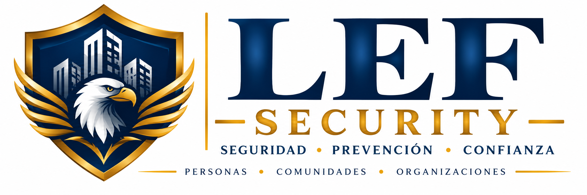

Diagnóstico de seguridad
Levantamiento de vulnerabilidades, controles y brechas.
Asesoría, auditoría, supervisión y planificación en seguridad privada para comunidades y organizaciones, con enfoque preventivo y operacional.

Levantamiento de vulnerabilidades, controles y brechas.
Revisión de procesos, registros, infraestructura y procedimientos.
Identificación, evaluación y priorización de riesgos.
Procedimientos para accesos, incidentes y contingencias.
Evaluación de puestos, rondas, registros y desempeño.
Apoyo en CCTV, control de acceso, alarmas y soluciones de seguridad.
Reconocer amenazas y vulnerabilidades.
Valorar riesgos y controles.
Definir medidas y prioridades.
Aplicar mejoras.
Supervisar y ajustar.
Evaluamos las condiciones de seguridad de la comunidad para identificar vulnerabilidades, brechas de control y oportunidades de mejora, estableciendo una base objetiva para la toma de decisiones.
Realizamos un levantamiento de las condiciones existentes considerando personas, procedimientos, infraestructura, tecnología, controles operacionales y capacidad de respuesta frente a incidentes.
Buscamos entregar una visión estructurada de las vulnerabilidades existentes, los controles implementados y las brechas que requieren intervención, permitiendo definir prioridades de manera informada.
Revisión de accesos peatonales y vehiculares, cierres perimetrales, puntos vulnerables, circulación y condiciones del entorno inmediato.
Evaluación de procedimientos de ingreso, visitas, proveedores, encomiendas, estacionamientos, llaves, rondas y registros.
Revisión funcional de CCTV, control de acceso, citofonía, alarmas y otros sistemas tecnológicos asociados a la seguridad.
Revisión de protocolos, instrucciones de puesto, registros, mecanismos de escalamiento y criterios de actuación frente a situaciones de seguridad.
Análisis de funciones, distribución de puestos, prácticas operativas, coordinación, cumplimiento de instrucciones y necesidades de capacitación.
Evaluación de condiciones generales de preparación, comunicación, respuesta y continuidad frente a incidentes y contingencias.
El diagnóstico se desarrolla mediante una secuencia que permite transformar observaciones en información útil para la gestión de seguridad.
Recopilamos antecedentes y conocemos las características generales de la instalación y su operación.
Observamos en terreno accesos, infraestructura, sistemas, procedimientos y condiciones relevantes para la seguridad.
Detectamos vulnerabilidades, brechas de control, desviaciones y situaciones que requieren revisión.
Relacionamos los hallazgos con su posible impacto, controles existentes y condiciones operacionales.
Ordenamos las necesidades detectadas considerando criticidad, impacto y urgencia de intervención.
Proponemos acciones de mejora y criterios para orientar decisiones posteriores de la comunidad.
Visión estructurada del estado observado de la seguridad.
Identificación de puntos y condiciones que requieren atención.
Detección de diferencias entre los controles existentes y las necesidades observadas.
Ordenamiento de hallazgos para facilitar la planificación de mejoras.
Propuestas orientadas a fortalecer controles, procedimientos y condiciones de seguridad.
Información inicial para definir protocolos, matrices de riesgo, mejoras operacionales o proyectos tecnológicos.
Antes de implementar nuevas medidas o invertir en tecnología, es fundamental conocer qué riesgos existen, qué controles funcionan y dónde se encuentran las principales brechas.
Revisamos de manera estructurada los procesos, procedimientos, registros, infraestructura y controles de seguridad existentes para determinar su nivel de aplicación, detectar desviaciones y establecer oportunidades concretas de mejora.
Contrastamos procedimientos, instrucciones, registros y medidas existentes con su aplicación real en terreno, identificando diferencias entre lo definido, lo registrado y lo efectivamente ejecutado.
Buscamos entregar información objetiva que permita corregir desviaciones, fortalecer controles y mejorar la capacidad de supervisión y seguimiento de la seguridad.
Revisión de las actividades y controles utilizados para gestionar accesos, vigilancia, rondas, novedades, incidentes y contingencias.
Verificación de protocolos, instrucciones de puesto, criterios de actuación, escalamiento y conocimiento del personal.
Revisión de libros de novedades, controles de acceso, rondas, incidentes, entrega de turnos y otros respaldos operacionales.
Observación de accesos, cierres, iluminación, zonas vulnerables, puestos de control y condiciones físicas relacionadas con la seguridad.
Revisión operacional de CCTV, control de acceso, alarmas, citofonía y otros elementos tecnológicos utilizados como medidas de control.
Evaluación de la aplicación de instrucciones, consistencia de los controles, coordinación entre turnos y capacidad de respuesta.
La auditoría se estructura para identificar evidencias, comparar condiciones y transformar los hallazgos en acciones de mejora verificables.
Definimos alcance, áreas, controles, antecedentes y criterios que serán objeto de revisión.
Analizamos documentación, procedimientos, registros y antecedentes relacionados con la seguridad.
Contrastamos los antecedentes con las condiciones y prácticas observadas en terreno.
Registramos hallazgos, desviaciones, incumplimientos operacionales y oportunidades de fortalecimiento.
Ordenamos los hallazgos según relevancia, impacto y necesidad de intervención.
Presentamos resultados y recomendaciones para facilitar la corrección y posterior seguimiento.
Documento estructurado con el alcance, observaciones y resultados obtenidos durante la revisión.
Identificación clara de desviaciones, debilidades y situaciones que requieren atención.
Antecedentes y registros que respaldan las observaciones realizadas durante el proceso.
Clasificación de los hallazgos para orientar recursos y acciones correctivas.
Recomendaciones y acciones sugeridas para fortalecer los controles evaluados.
Estructura inicial para verificar posteriormente el avance y cierre de los hallazgos.
Una auditoría permite verificar si los controles definidos realmente están funcionando y entrega evidencia para corregir brechas antes de que se transformen en problemas mayores.
Identificamos, analizamos y priorizamos riesgos de seguridad para transformar situaciones, vulnerabilidades y amenazas en información estructurada que facilite la toma de decisiones y la planificación de medidas de control.
Construimos matrices que permiten registrar escenarios de riesgo, controles existentes, vulnerabilidades, posibles consecuencias y niveles de prioridad, facilitando una visión ordenada de las necesidades de seguridad.
Buscamos que la comunidad u organización pueda orientar sus recursos y decisiones hacia los riesgos de mayor relevancia, evitando intervenir únicamente por percepción, urgencia momentánea o reacción frente a incidentes.
Identificación de personas, instalaciones, accesos, equipos, información y sectores cuya afectación puede generar consecuencias relevantes.
Reconocimiento de situaciones o eventos que podrían afectar la seguridad, continuidad operacional o protección de personas y bienes.
Identificación de debilidades físicas, tecnológicas, procedimentales u operacionales que pueden facilitar la materialización de un riesgo.
Revisión de medidas actualmente implementadas para prevenir, detectar, disuadir o responder frente a los escenarios identificados.
Valoración de las posibles consecuencias y de la posibilidad de ocurrencia utilizando criterios previamente definidos.
Clasificación de los riesgos para establecer prioridades de tratamiento, seguimiento y control.
La matriz organiza el análisis mediante criterios consistentes para que cada riesgo pueda ser comprendido, comparado, priorizado y posteriormente gestionado.
Reconocemos activos, amenazas, vulnerabilidades y escenarios relevantes para la seguridad.
Definimos cada escenario de manera clara, indicando qué podría ocurrir y qué elementos podrían verse afectados.
Analizamos probabilidad, impacto y controles existentes utilizando criterios definidos para la matriz.
Asignamos niveles de riesgo que permitan comparar escenarios y visualizar su criticidad.
Ordenamos los riesgos para determinar cuáles requieren intervención, seguimiento o revisión prioritaria.
Proponemos medidas destinadas a reducir vulnerabilidades, fortalecer controles y disminuir la exposición al riesgo.
Registro estructurado de los riesgos identificados y de los criterios utilizados para su evaluación.
Visualización de los riesgos que requieren mayor atención y seguimiento.
Identificación de las medidas actualmente implementadas y su relación con los riesgos evaluados.
Detección de riesgos que presentan controles insuficientes, débiles o inexistentes.
Recomendaciones orientadas a reducir exposición, fortalecer controles y mejorar la prevención.
Estructura que permite revisar posteriormente cambios en los riesgos, controles implementados y medidas pendientes.
Una matriz de riesgos permite pasar de una percepción general de inseguridad a una evaluación estructurada, estableciendo qué riesgos existen, cuáles son prioritarios y qué controles requieren fortalecimiento.
Diseñamos y estructuramos procedimientos claros para que el personal sepa cómo actuar frente a accesos, incidentes, emergencias y situaciones operacionales, reduciendo la improvisación y fortaleciendo la continuidad de los controles.
Definimos secuencias de actuación, responsabilidades, controles, registros y mecanismos de escalamiento para situaciones que requieren una respuesta uniforme y trazable.
Buscamos que cada persona conozca qué debe hacer, qué debe verificar, a quién debe informar y qué antecedentes debe registrar frente a situaciones previamente definidas.
Procedimientos para residentes, visitas, proveedores, trabajadores, vehículos y situaciones excepcionales de ingreso.
Criterios para recepción, identificación, registro, almacenamiento temporal y entrega de encomiendas, llaves u otros elementos.
Definición de puntos de control, frecuencias, observaciones, registros y acciones frente a condiciones anormales.
Procedimientos de actuación, comunicación, resguardo de antecedentes, registro y escalamiento frente a eventos de seguridad.
Coordinación inicial frente a incendios, sismos, emergencias médicas, fallas críticas y otras contingencias definidas por la organización.
Procedimientos para transferir novedades, pendientes, instrucciones, llaves, equipos y antecedentes relevantes entre turnos.
Cada protocolo se desarrolla considerando la realidad operacional, los recursos disponibles, las responsabilidades involucradas y la necesidad de generar registros verificables.
Definimos la situación, proceso o riesgo que requiere un procedimiento formal.
Revisamos cómo se ejecuta actualmente la actividad, qué controles existen y dónde se presentan brechas.
Establecemos secuencia de actuación, responsables, verificaciones, comunicaciones y registros necesarios.
Contrastamos el procedimiento con las condiciones reales de operación para verificar que pueda ejecutarse correctamente.
Apoyamos su comunicación, entrega al personal y comprensión de las acciones definidas.
Evaluamos su aplicación y proponemos ajustes cuando cambian riesgos, instalaciones, tecnología o condiciones operacionales.
Procedimientos escritos con secuencias de actuación claramente definidas.
Definición de quién ejecuta, comunica, registra y escala cada situación.
Orden lógico de las acciones que deben realizarse desde la detección hasta el cierre.
Definición de los antecedentes que deben quedar respaldados durante la ejecución del procedimiento.
Orientación sobre cuándo una situación debe ser informada o derivada a responsables superiores o servicios externos.
Contenido estructurado que puede utilizarse posteriormente para inducción, entrenamiento y evaluación del personal.
Un protocolo efectivo no es sólo un documento: debe ser comprensible, aplicable, conocido por quienes lo ejecutan y capaz de generar evidencia de las acciones realizadas.
Evaluamos en terreno la ejecución de los servicios de seguridad, verificando puestos, rondas, registros, procedimientos y desempeño operacional para detectar desviaciones y fortalecer el cumplimiento de los controles establecidos.
Observamos directamente el funcionamiento de puestos y controles, revisamos registros, verificamos el cumplimiento de instrucciones y analizamos cómo responde el personal frente a situaciones habituales y contingencias.
Buscamos detectar oportunamente desviaciones, prácticas deficientes, necesidades de capacitación y oportunidades de mejora que permitan mantener controles consistentes durante todos los turnos.
Revisión de funciones, condiciones de operación, elementos disponibles, instrucciones y cumplimiento de las tareas asignadas.
Verificación de procedimientos aplicados a residentes, visitas, proveedores, trabajadores, vehículos y situaciones excepcionales.
Revisión de recorridos, frecuencias, puntos de control, observaciones realizadas y registros asociados.
Evaluación de libros de novedades, controles, entregas de turno, incidentes y otros antecedentes necesarios para la trazabilidad.
Verificación del conocimiento y aplicación de protocolos, instrucciones de puesto y mecanismos de comunicación y escalamiento.
Observación de criterios operacionales, presentación, atención, prevención, coordinación y respuesta frente a situaciones del servicio.
La supervisión combina observación en terreno, revisión de evidencias y retroalimentación para transformar desviaciones detectadas en acciones concretas de mejora.
Definimos puestos, controles, procedimientos y aspectos que serán objeto de supervisión.
Verificamos directamente cómo se ejecutan las funciones y controles durante la operación.
Contrastamos lo observado con instrucciones, protocolos, registros y condiciones establecidas.
Documentamos hallazgos, desviaciones, fortalezas y antecedentes relevantes de la supervisión.
Comunicamos observaciones y orientamos acciones correctivas o necesidades de refuerzo.
Verificamos posteriormente la implementación y continuidad de las mejoras acordadas.
Registro estructurado de las condiciones, observaciones y resultados obtenidos durante la revisión.
Identificación de desviaciones, incumplimientos y oportunidades de mejora detectadas en terreno.
Reconocimiento de prácticas y controles correctamente ejecutados que conviene mantener.
Recomendaciones orientadas a corregir desviaciones y fortalecer la ejecución del servicio.
Identificación de materias que requieren inducción, entrenamiento o refuerzo del personal.
Base documental para comprobar posteriormente el cumplimiento y permanencia de las mejoras.
La existencia de procedimientos no garantiza por sí sola su cumplimiento. La supervisión permite verificar cómo funcionan los controles durante la operación real y actuar oportunamente frente a desviaciones.
Apoyamos la evaluación, definición y seguimiento de proyectos destinados a fortalecer la seguridad mediante CCTV, control de acceso, alarmas y otras soluciones tecnológicas, procurando que cada inversión responda a necesidades previamente identificadas.
Analizamos requerimientos, condiciones existentes y objetivos del proyecto para apoyar la definición de alcances, criterios funcionales y alternativas que puedan ser evaluadas antes de tomar una decisión de inversión.
Buscamos evitar soluciones aisladas o compras basadas únicamente en tecnología, procurando que cada proyecto responda a riesgos, vulnerabilidades, necesidades operacionales y objetivos claramente definidos.
Apoyo en levantamiento de necesidades, ubicación funcional de cámaras, cobertura esperada, visualización, grabación y criterios operacionales.
Evaluación de necesidades para accesos peatonales, vehiculares y sectores restringidos, considerando operación, usuarios y trazabilidad.
Análisis de requerimientos para sistemas de detección, alertas y comunicación asociados a situaciones previamente definidas.
Apoyo en evaluación de soluciones que permitan mejorar comunicación, verificación y coordinación en accesos y puntos operacionales.
Revisión de posibilidades de coordinación entre sistemas para evitar soluciones aisladas y mejorar la gestión de información y eventos.
Identificación de necesidades complementarias relacionadas con iluminación, cierres, accesos, puestos de control y otros elementos físicos.
El proyecto se estructura desde el problema que se busca resolver, evitando comenzar por la compra de equipos sin haber definido previamente riesgos, objetivos y requerimientos operacionales.
Identificamos riesgos, vulnerabilidades, problemas operacionales y necesidades que justifican el proyecto.
Establecemos objetivos, alcance, sectores involucrados y resultados esperados de la solución.
Desarrollamos criterios funcionales que permitan solicitar y comparar propuestas sobre una base común.
Apoyamos la revisión de alternativas considerando alcance, funcionalidades, condiciones, costos y diferencias relevantes.
Apoyamos el seguimiento del proyecto para verificar su correspondencia con el alcance y las necesidades definidas.
Revisamos funcionalmente la solución implementada y su integración con procedimientos y operación.
Definición estructurada de los problemas, riesgos y objetivos que originan el proyecto.
Descripción de las funciones y resultados que se espera obtener de la solución.
Base para comparar propuestas y analizar diferencias relevantes entre alternativas.
Ordenamiento de antecedentes técnicos, funcionales y comerciales para apoyar la toma de decisiones.
Control de avances, observaciones y aspectos relevantes durante la implementación del proyecto.
Revisión de la solución implementada respecto de las necesidades y criterios definidos inicialmente.
La tecnología es una herramienta dentro del sistema de seguridad. Un proyecto efectivo comienza identificando el riesgo y la necesidad operacional antes de seleccionar la solución.